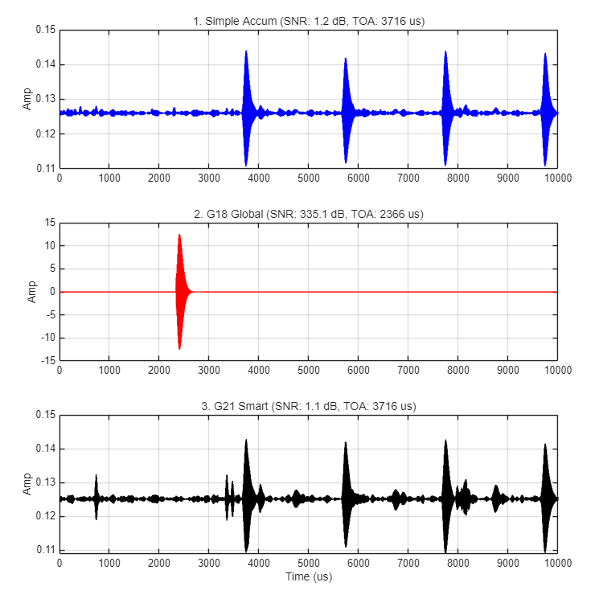

eLoran time-of-arrival under random sample loss
샘플이 무작위로 빠지는 eLoran 수신기에서 도달 시각을 지키려 한 과제입니다. 보상 기법 두 가지를 설계했지만 둘 다 단순 누적을 넘지 못했고, 왜 실패했는지까지 정리했습니다.
eLoran receivers add many pulse repetitions coherently to lift a weak signal out of noise, then read the time of arrival (TOA) from the result. When the receiver drops samples, that addition breaks. I tried to repair the damage before adding. Each repair improved how clean the signal looked, and each made the timing worse.
The problem 문제
Adding N repetitions raises SNR by 10·log₁₀N dB, but only if every repetition stays aligned in time. One carrier cycle off (10 µs) is kilometres of range error.
The eLoran signal
An eLoran pulse is a 100 kHz carrier under an asymmetric envelope; a Master station sends groups of 9 pulses and each Secondary 8, repeating every group repetition interval. TOA is taken 30 µs into the pulse, before skywave arrives. Adding N repetitions raises SNR by 10·log₁₀N dB — but only if every repetition is aligned in time. A one-carrier-cycle mistake (10 µs) is a cycle slip, kilometres of range error.
What I tried 시도한 것
Losses that delete samples shift every later phase; losses that only zero them cost energy. Deletion is the damaging case.
1 · The loss model
1 · A loss model. Two independent kinds of loss: single samples dropped inside the receiver (interrupt delay, DMA overrun) and contiguous bursts from outside (lightning, interference) that can cross group boundaries. Each can be handled two ways: blanking keeps the index and zeroes the value — only energy is lost; compression deletes the gap and shifts everything after it — every later phase moves. Compression is the damaging case.

| attempt | idea | what happened | why it failed |
|---|---|---|---|
| 2 · Time-domain repair | band-pass, estimate each repetition's shift by cross-correlation, discard low-confidence ones, shift back, average recursively, refill gaps from a template | Master within 1.1 µs, but Secondaries off by thousands to tens of thousands of µs; on the recorded signal only one pulse survived | the template refill overfit to one Master pulse, and nothing kept the rest of the chain in step |
| 3a · S-transform | time–frequency soft decision on energy, phase and structure | phase collapse grew instead of shrinking | its windows are placed by time index — the very thing that was broken. Replaced by an FFT design |
| 3b · Frequency-domain refinement | quality gate, Wiener filter, Gaussian band mask around 100 kHz, phase-consistency mask, quality-weighted recursive average | SNR +6.78 dB, yet the Master TOA settled about 1.5 µs late and error variance grew; the second Secondary's jitter spread past ±10 µs | masking and phase edits broke linear phase; the inverse FFT leaked energy into ringing between pulses and a fixed delay |
4 · Evaluation. Single-run TOA tests in simulation, 1,000 Monte-Carlo runs for the frequency-domain scheme (the time-domain scheme had already failed), and one recorded eLoran signal checked by waveform.
